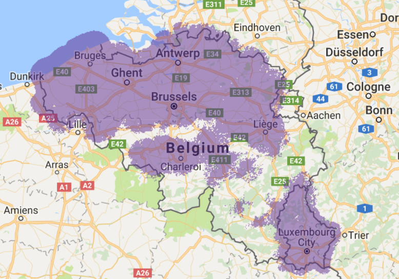

Ordina JWorks
Who are we?
Hi, I'm Frederick
Solution Expert Smart Technologies
https://github.com/fbousson
Twitter: @fbousson
Hi, I'm Kevin
Competence Leader Internet of Things
https://github.com/beele
Twitter: @nabeele_
Agenda
- Slotmachine
- Network
- Sensors
- Application
- Q&A
Slotmachine
Slotmachine

Setup
Setup
How is the demo set up:
- Runs on custom NodeJS server application
- Sensors registered via the Proximus MyThings Application
- MyThings sends sensor data to our backend
- Websocket for application event exchange
More about sensors (MyThings) and the backend in the their respective sections...
Network
Network

Network coverage

LoRa Range extender
Sensors
Sensors

Sensor types
Proximus MySense
MySense Features
Onboard sensors:
- Temperature
- Accelerometer
- Push button
- Led: Green, Orange, Red
Also includes a LoRa model
MySense software
Runs simple Javascript, but very limited cpu, memory, storage...
Has JS objects available to interact with the sensors and the LoRa model
MySense sample code
B.on("press", pressed);
function pressed(millis) {
if (millis>10000) led.blink(LED3,1);
else if (millis>4000) led.blink(LED2,1);
else if (millis>200) led.blink(LED1,1);
L.send(21, "push");
}
MySense challenges
- Need for a physical sensor
- Deployment times
- No debugger: log statements everywhere!
- API discovery
- Version compatibility
Tooling
- Jasmine: testframework for behaviour driven development
- Use mocked sensors
- Reduces need for deployment
- Documents the code
- Protect against regression
- Gulp: build tool
- TypeScript compilation to JavaScript
- code optimisation: filtering
- packaging: concatenation, minification
- JS Lint: code quality checks
Typescript
- Easier modularity with Classes / Interfaces
- Compiler checks:
- Refactoring
- Type safety
- Code completion
Typescript code
TODO button TS interface and sample codeGenerated JS code
TODO generated JS codeMyThings platform
Integration
Use cases
What does that actually mean in the real world?
Temperature alerts
Track and trace
Some assembly required
Sticky sensors
Experimenting with placement
Man hole

Application
Application
We needed to build IoT prototypes...
Development requirements:
- Easy to set up
- Easy to pickup and extend
- Fast iterative development
So what technology did we pick...
Not these...


But this!
NodeJS
- Runs on any platform
- Reasonable fast
- Vast userbase & support community
- Loads of libraries available, also for IoT & electronics
NodeJS
Can be used for various tasks and purposes:
- Small yet efficient web server
- Code playground, prototype something quickly
- Automation and tooling, instead of using ruby/python/…
- Raspberry pi’s and other IoT devices that can run Node
JavaScript
NodeJS runs this. It requires no compilation beforehand.
While this is nice it is limiting in a number of ways:
- JavaScript coding quirks
- No classes and modules (ES5)
- No type safety
TypeScript
An open source superset of JavaScript powered by Microsoft:
- Compiles to plain JavaScript
- Provides a more structured language
- Type safety/Interfaces/Classes/Modules/...
Gives you most ES6 features today! The only 'downside' is that it requires compilation!
Architecture

Multi process NodeJS
private forkWorkers(): void {
//Fork data broker.
this.databroker = cluster.fork({name: 'broker', debug: this.isDebug});
//Fork interval worker.
this.intervalWorker = cluster.fork({name: 'interval', debug: this.isDebug});
//Fork normal server worker instances. These will handle all HTTP requests.
let cores:number = os.cpus().length;
let numberOfHttpWorkers:number = cores - 2 > 0 ? cores - 2 : 1;
console.log('[MASTER] There are ' + cores + ' cores available, starting ' + numberOfHttpWorkers + ' HTTP workers...');
for (let i:number = 0; i < numberOfHttpWorkers; i++) {
let worker = cluster.fork({name: 'http', debug: this.isDebug});
this.httpWorkers.push(worker);
}
//Revive workers if they die!
if(!this.isDebug) {
cluster.on('exit', this.reviveWorker);
}
};
Inter Process Messaging
public sendMessage(payload: any, messageTarget: MessageTarget, targetFunctionName: string): void {
console.log('[WORKER id:' + this.workerId + '] Sending request message.');
let message: IPCMessage = new IPCRequest(this.workerId, null, payload, messageTarget, targetFunctionName);
process.send(message);
}
public sendMessageWithCallback(payload: any, callback: Function, messageTarget: MessageTarget, targetFunctionName: string): void {
let callbackId: string = process.hrtime() + "--" + (Math.random() * 6);
this.callbacks.push([callbackId, callback]);
console.log('[WORKER id:' + this.workerId + '] Sending request message with callback (' + callbackId + ')');
let message: IPCMessage = new IPCRequest(this.workerId, callbackId, payload, messageTarget, targetFunctionName);
process.send(message);
}
public sendReply(payload: any, originalMessage: IPCRequest): void {
console.log('[WORKER id:' + this.workerId + '] Sending reply message (callback: ' + originalMessage.callbackId + ')');
let reply: IPCMessage = new IPCReply(this.workerId, payload, originalMessage);
process.send(reply);
}
IPC Continued
private targetHandler(msg: IPCMessage): void {
if(msg.type == IPCMessage.TYPE_REQUEST) {
let m: IPCRequest = <IPCReply> msg;
switch (m.target){
case MessageTarget.DATA_BROKER:
this.dataBroker.send(msg);
break;
case MessageTarget.INTERVAL_WORKER:
this.intervalWorker.send(msg);
break;
case MessageTarget.HTTP_WORKER:
let index: number = Math.round(Math.random() * this.httpWorkers.length) - 1;
index = index === -1 ? 0 : index;
this.httpWorkers[index].send(msg);
break;
default:
console.error('[MASTER] Cannot find message target: ' + m.target);
}
} else if(msg.type == IPCMessage.TYPE_REPLY) {
let m: IPCReply = <IPCReply>msg;
cluster.workers[m.originalMessage.workerId].send(msg);
}
};
Defining endpoints
let endpointManager: EndpointManager = EndpointManager.getInstance();
endpointManager.registerEndpoint(
new EndpointDefinition('/', this.index.bind(this))
);
endpointManager.registerEndpoint(
new EndpointDefinition('/helloworld', this.helloworld.bind(this),
[new Parameter<string>(
'name',
'string field containing the name',
new StringNotEmptyValidatorImpl()
)]
)
);
endpointManager.registerEndpoint(
new EndpointDefinition('/helloworld/{name}', this.helloworld.bind(this),
[new Parameter<string>(
'name',
'string field containing the name',
new StringNotEmptyValidatorImpl()
)]
)
);
Websockets
this.sio = socketIO(
http.createServer()
.listen(process.env.SOCKETPORT || this.config.settings.socketPort, '0.0.0.0')
);
this.sio.serveClient(true);
this.sio
.of('/socket')
.on('connection', (socket: SocketIO.Socket) => {
console.log(socket.id + ' connected');
socket.emit('welcome', 'You have successfully connected to the web socket!');
socket.on('app-event', (data: any) => {
console.log('Message received from client:' + data);
});
});
private broadcastMessage(message: any): void {
console.log('Broadcasting web socket message');
this.sio.of('/socket').emit('app-event', JSON.stringify(message));
}
Conclusion
Complete rewrite in TypeScript:
- Much less error prone programming
- Code looks and feels better with types
- Much better readability
- Easier to refactor code without breaking things
Q&A
Resources
Github repository for the server application:
https://github.com/ordina-jworks/NodeSimpleServer
Feel free to contribute!
Got any burning questions?
You can always contact us via:
Kevin Van den Abeele
Competence Leader Internet of Things
https://github.com/beele
Twitter: @nabeele_
Thanks for attending!
Now kick some ass!